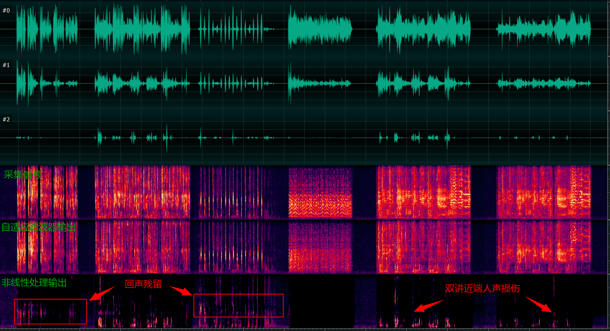

AEC 音频分析展示
频谱分析图

音频播放器 (48kHz 采样率)
参考信号 (reverse0)
您的浏览器不支持 audio 元素。
扬声器播放的参考信号
原始输入音频 (input0)
您的浏览器不支持 audio 元素。
原始麦克风输入信号
自适应滤波器输出
您的浏览器不支持 audio 元素。
经过 AEC-自适应滤波器处理，固定延迟补偿 44ms
非线性抑制输出
您的浏览器不支持 audio 元素。
经过 AEC-NLP处理